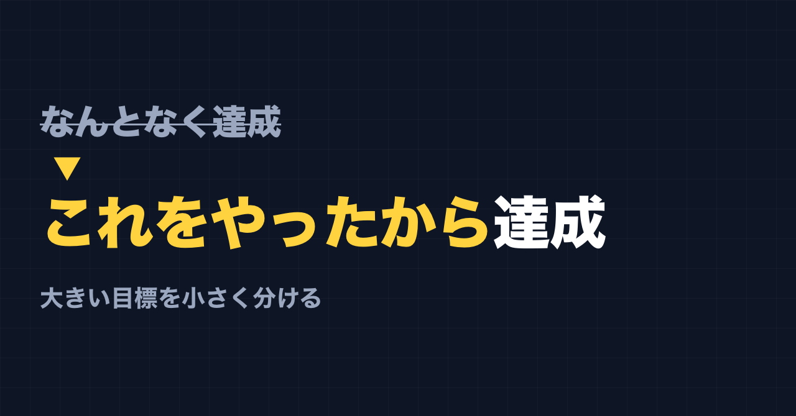
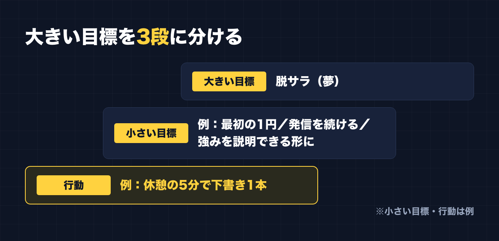

1. タイトルをコピーして、note のタイトル欄に貼る
2. 「本文1をコピー」から順にコピーし、note の本文に貼る
3. 青いラベルの位置に、images フォルダの同じ名前の画像を入れる（本文には貼られません）
※ 見出しが普通の文字になった場合は、その行を選んで「大見出し」を設定してください

「『なんとなく達成できた』じゃなくて、『これをやってきたから達成できた』にしてほしいんです」
仕事で人に教える側に立つとき、目標の話になると、私はこう話します。
目標が達成できたこと自体は、もちろんいいことです。でも、なぜ達成できたのかが自分で説明できないと、次に同じことはできません。
大きい目標 → 小さい目標 → 行動
私が研修で話している順番は、こうです。
1. 大きい目標を持つ
2. そのための、小さい目標を持つ
3. 小さい目標のための、行動を考える
大きい目標だけだと、今日何をすればいいのかが分かりません。行動だけだと、それが何につながっているのかが分かりません。
間に小さい目標を挟むと、「今日のこの行動は、この小さい目標のため。この小さい目標は、あの大きい目標のため」と、つながりが見えるようになります。
そして、つながりが見えていれば、達成したときに「これをやってきたから達成できた」と言えます。

私の大きい目標は「脱サラ」
人に話しているだけでは説得力がないので、自分の目標でも考えてみます。
私の大きい目標は、脱サラです。できれば、月100万。
これは夢として書いています。見込みでも、約束でもありません。今の私は会社員で、脱サラはまだ遠いです。自分で作ったツールも、今のところ売上はゼロです。
でも、夢は夢として持っていていいと思っています。大事なのは、そこから小さい目標と行動に下ろせるかどうかです。
分けてみると、こうなる（例）
ここから先は、分け方を説明するための例です。私が実際にこの通りの目標を立てている、という話ではありません。
大きい目標
- 脱サラ（夢として、月100万）
小さい目標（例）
- 副業で、最初の1円の売上を出す
- 発信を、決めた期間続ける
- 自分の強みを、人に説明できる形にする
行動（例）
- 休憩の5分で、投稿の下書きを1本書く
- 週に1回、自分の強みを1行で書き直してみる
- 1日1回、うまくいっている投稿を1つ見て、どこが良いかをメモする
こうして見ると、「脱サラ」という大きすぎる言葉が、「休憩の5分で下書き1本」まで下りてきます。
「5分でやる」は、実際に私がやっていること
ひとつだけ、例ではなく私が実際にやっていることがあります。
副業は、昼休みや休憩の合間の5分、10分でやっています。
前は「帰宅したら毎日1〜2時間」と決めていました。でも疲れてできず、できない自分に落ち込みました。今は時間を決めず、やれるときにやる。そうしてから気持ちが楽になり、続いています。
行動は、続けられる大きさでないと意味がありません。「毎日1〜2時間」は、私にとっては行動として大きすぎました。
「これをやったから」と言えるようにするために
小さく分けたあと、もうひとつ大事なことがあります。
やったことを残しておくことです。
- 何をやったか（行動）
- それは、どの小さい目標のためだったか
- 結果はどうだったか
これが残っていれば、うまくいったときは「これをやったから」と言えます。うまくいかなかったときも、「この行動を変えてみよう」と直せます。
「なんとなく」で終わると、うまくいっても、いかなくても、次に活かせません。
最後に
大きい目標は、夢でいい。でも、夢のままだと今日は何も変わりません。
小さい目標を1つ、行動を1つ。まずはそこまで下ろしてみてください。
ここからは宣伝です。
公式LINEでは、「特典」と送っていただくと、LINE限定のプロンプト5本をお届けしています。
https://lin.ee/RzyA13P
「副業ドラフト」は、AI の質問に答えるだけで、副業に使える強みの棚卸しと Threads の下書きを作るツールです。Threads の下書き3本までは無料で使えます。
https://note-threadssf.onrender.com
Threads では、こうした試行錯誤を日々発信しています。
https://www.threads.com/@shachiku_mao
最後まで読んでいただき、ありがとうございました。